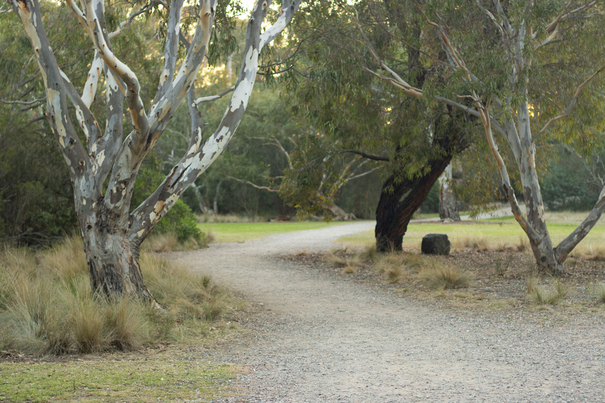

1 / 4
Ampitheater Entrance
2 / 4

Path Through Ampitheater
3 / 4
Me Preforming
4 / 4

Purple Swamp Hen
Every year, the Newport Fiddle and Folk festival host the bush dance in the
Newport Lakes Ampitheater. It began in March 2005, and they have held a bush
dance every year since. As a child I participated in a couple, singing in my
school choir, I don’t remember what I sang, but it was a lot of fun.
The location is a beautiful spot to host a concert, surrounded by trees and
birds, but the grass land provided enough space to preform and watch. Other
events get hosted here to, a couple of Shakespeare in the park shows, and
recently storytelling sessions. These community events help foster connections,
providing not only a fun day out, but building people relationships and
subsequent desire to help and conserve the park.